How safe is your airport's catchment?
Every airport has people who live closer to it than to any other. What matters is how much closer. If it's only a few minutes, people will drive past you for a cheaper fare or a better connection. If it's 90 minutes, they are yours.
I mapped this for New Zealand, Australia and Ireland. For every neighbourhood I took the drive time to each airport, found the closest, and measured its head start over the next closest.
New Zealand

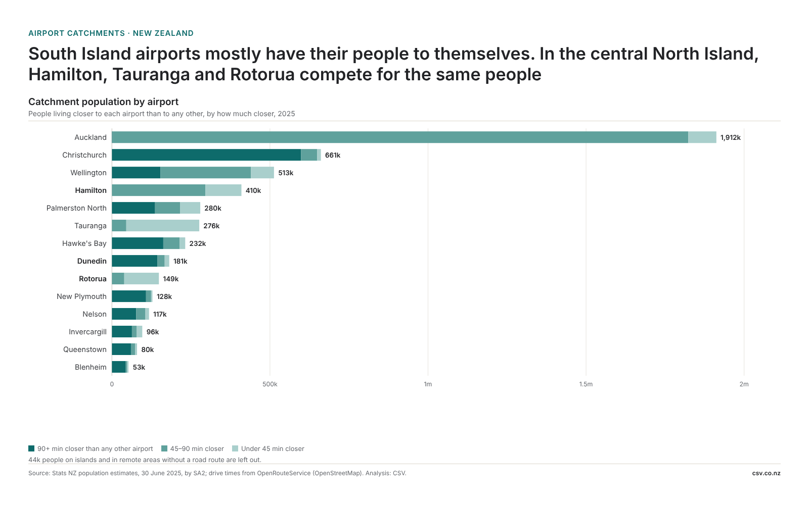

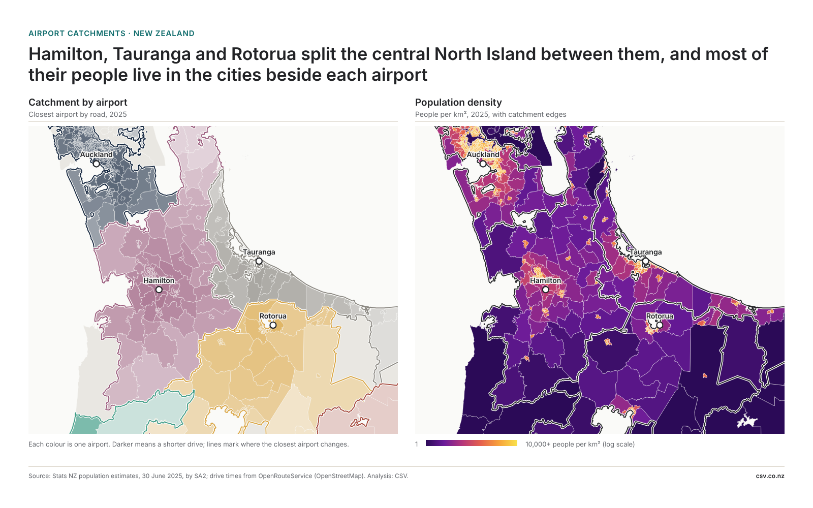
Dunedin's 181,000 people are well defended: four in five would have to drive 90 minutes more to reach another airport. Hamilton (410,000) and Rotorua (149,000) share the central North Island with Tauranga, and few of their people have a big head start.

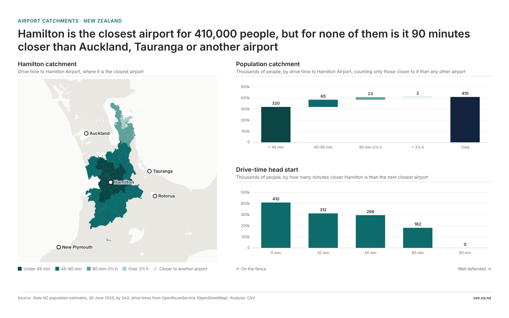

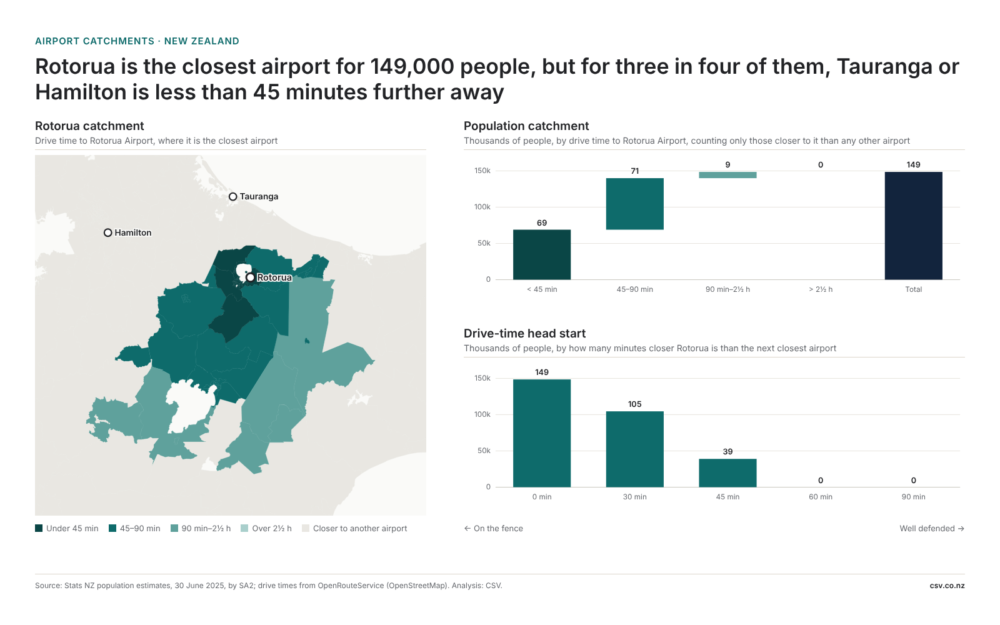

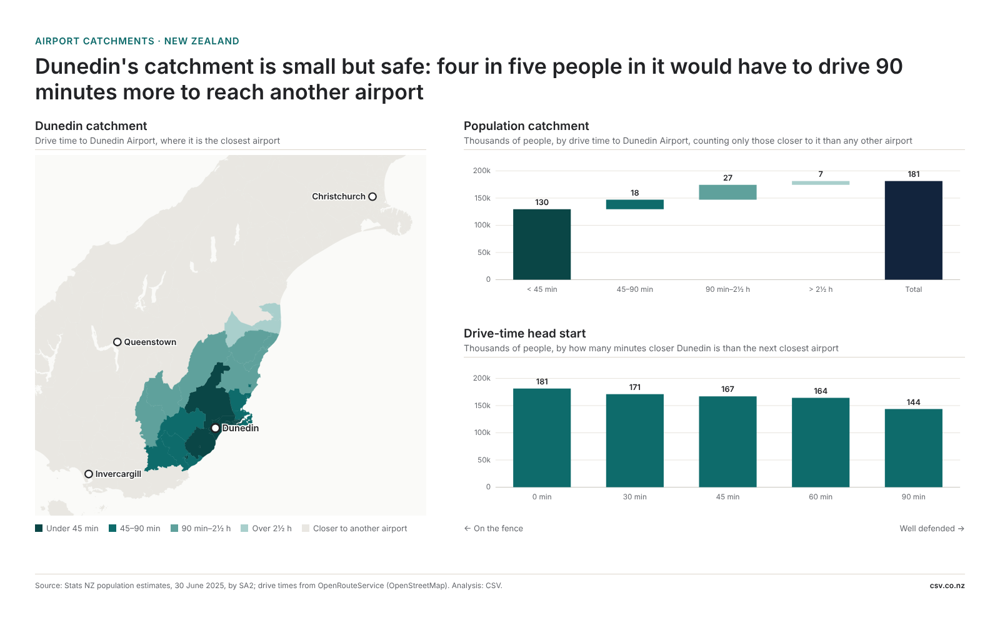
Australia

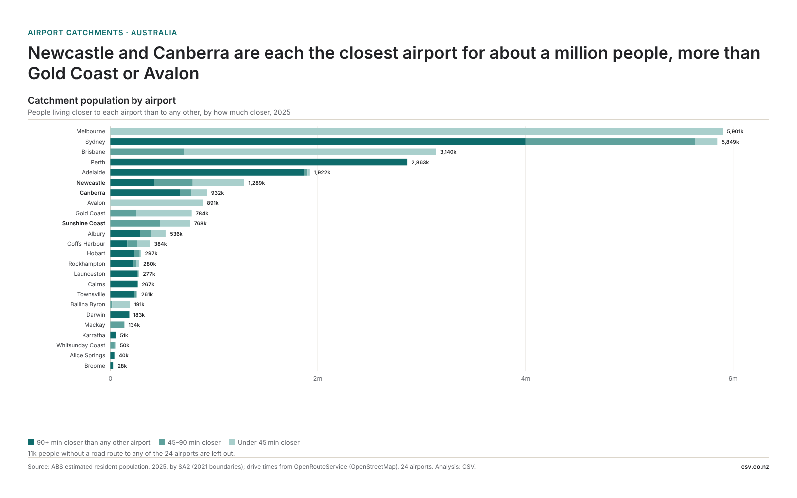

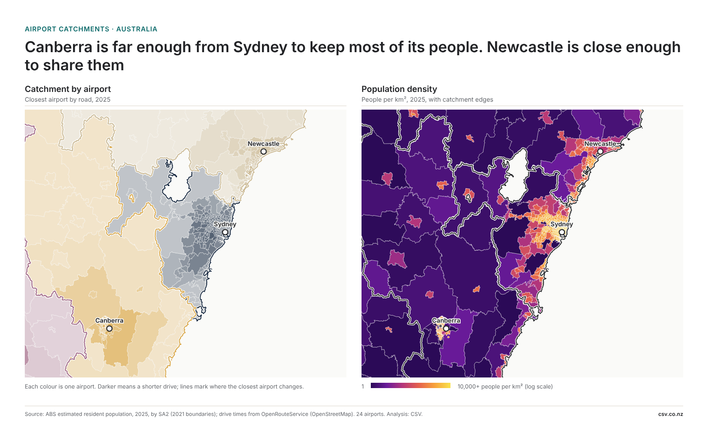
Canberra keeps 674,000 of its 932,000 people with a 90-minute head start. Newcastle has 1.3 million, but for two in three of them Sydney or another airport is less than 90 minutes further away. Sunshine Coast has 768,000, and for most of them Brisbane is less than an hour further.

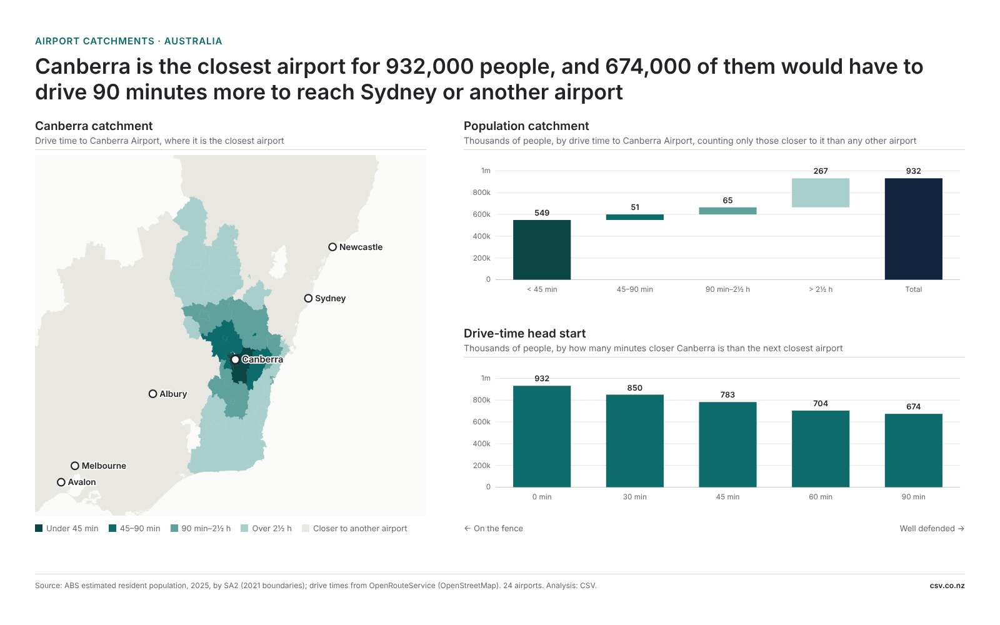

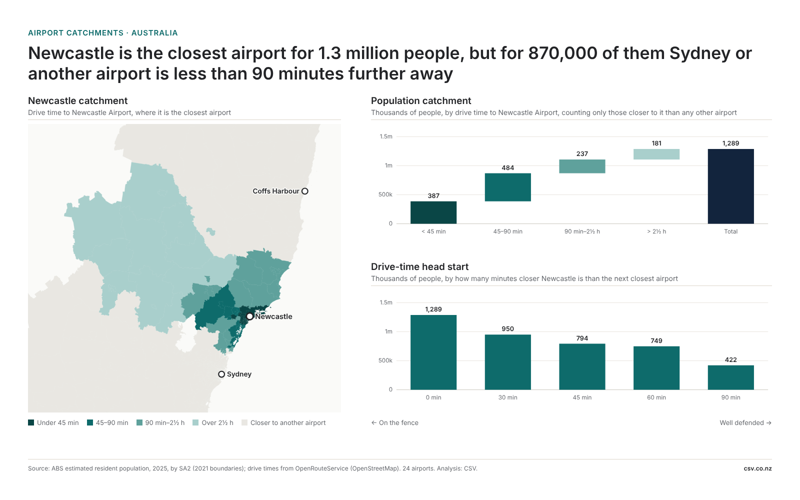

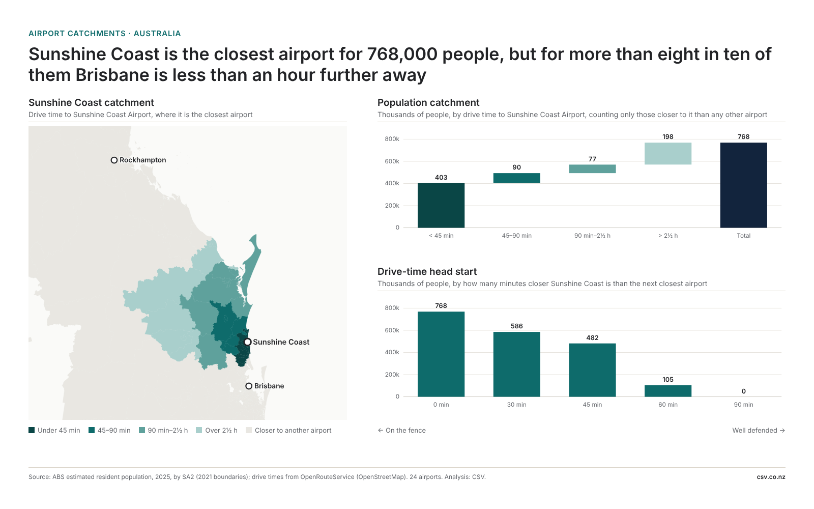
Ireland

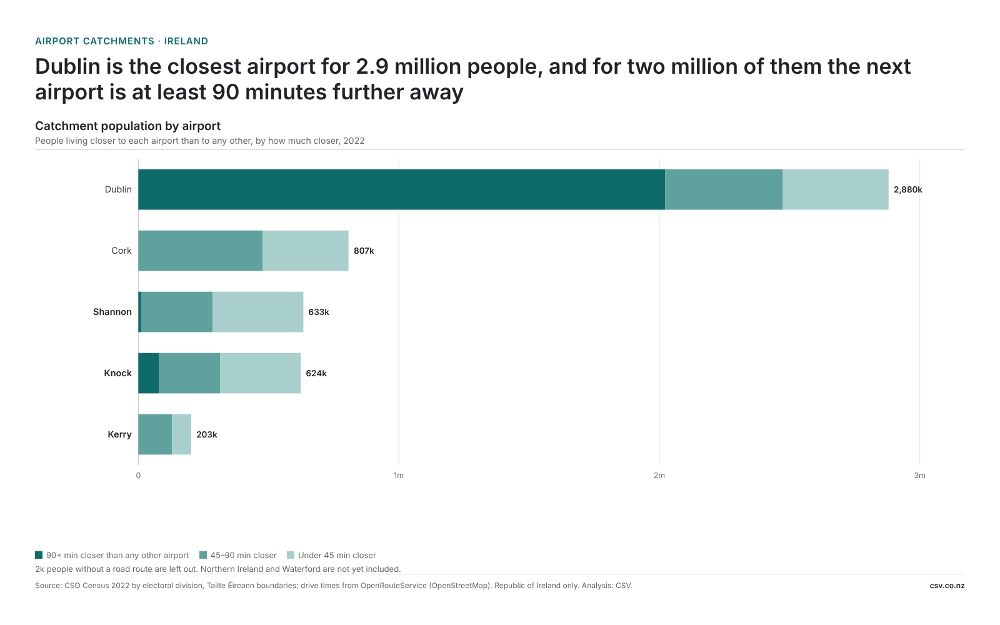

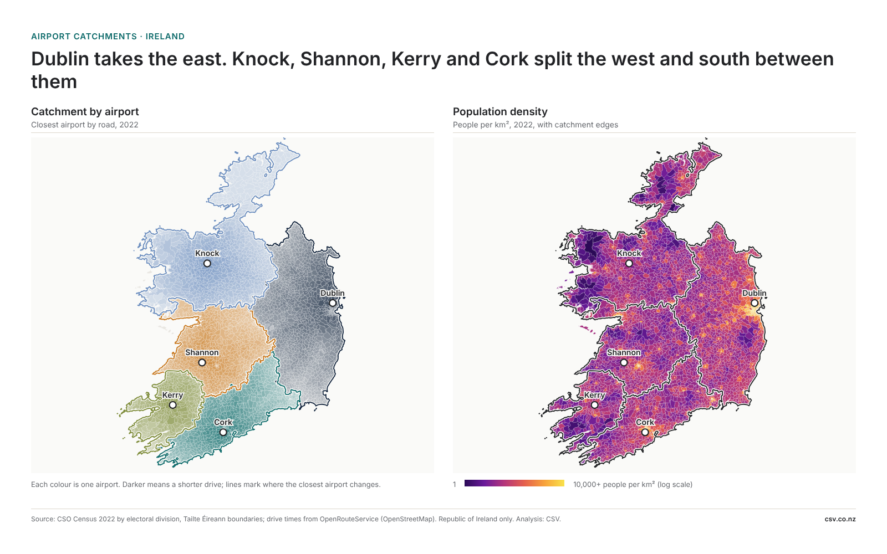
Dublin is the closest airport for 2.9 million people. In the west, Shannon, Knock and Kerry compete for the same people: for more than half of Shannon's 633,000, another airport is less than 45 minutes further away.

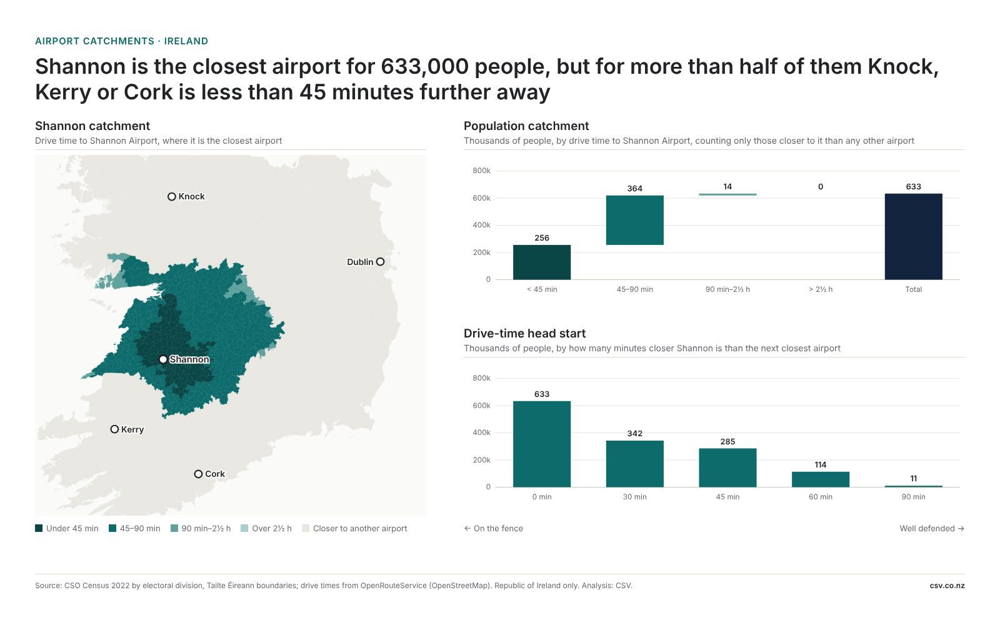

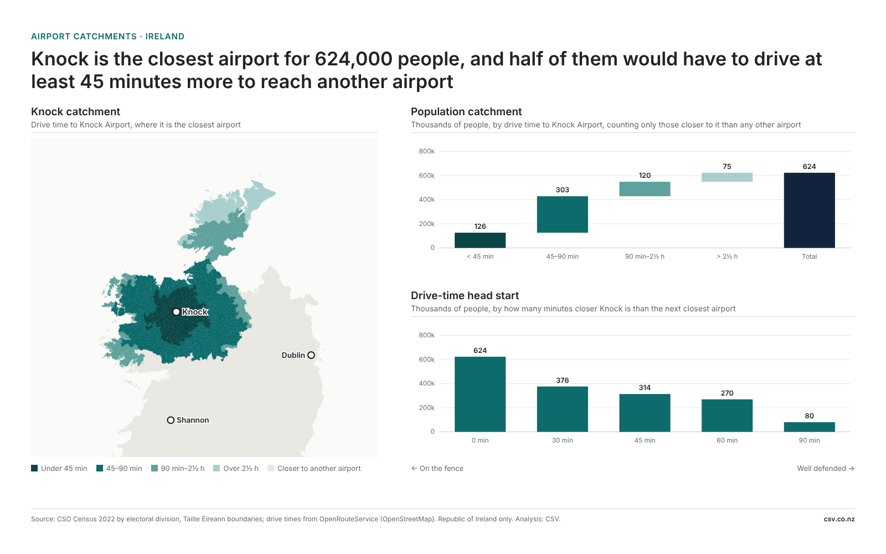

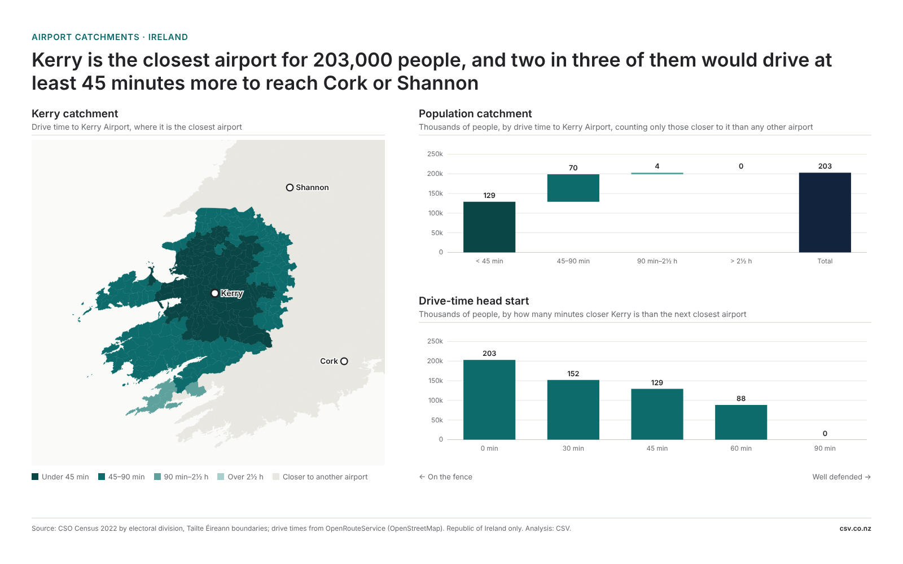
New Zealand: Stats NZ estimated resident population at 30 June 2025, by SA2. Australia: ABS estimated resident population 2025, by SA2 (2021 boundaries). Ireland: CSO Census 2022 by electoral division (Republic of Ireland only; Northern Ireland and Waterford not yet included). Drive times: OpenRouteService on OpenStreetMap roads, from each area's centre, routed October 2026. Every airport in each country's dataset counts as a rival (14 in New Zealand, 24 in Australia, 5 in Ireland). Analysis: CSV. Post published: [day month year].